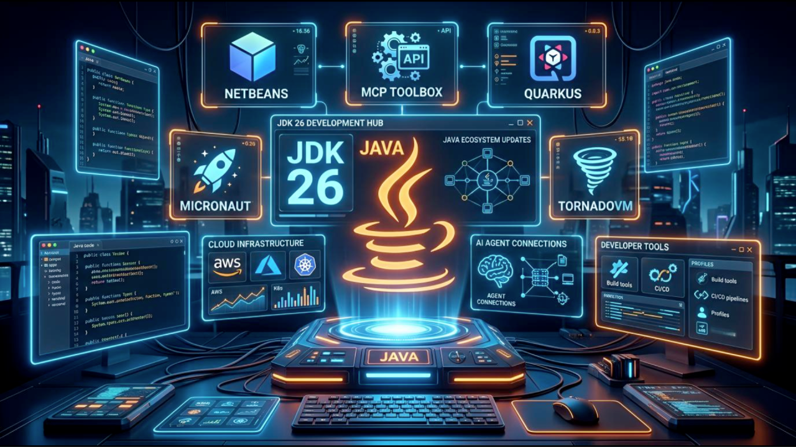

La transformación digital impulsa el crecimiento del IoT, la inteligencia artificial y la Industria 4.0

El Centro para el Desarrollo y Aplicación de las Tecnologías del Internet de las Cosas de Georgia Tech publicó en agosto de 2026 una nueva actualización sobre la transformación digital y las tecnologías que están evolucionando alrededor del mundo. La publicación analiza diferentes acontecimientos ocurridos entre el 1 y el 14 de agosto y muestra cómo distintas tecnologías están comenzando a relacionarse cada vez más entre sí. Entre las tecnologías mencionadas se encuentran el Internet de las Cosas (IoT), la inteligencia artificial, la automatización, la computación en la nube, la computación en el borde (edge computing), las redes 5G y 6G, la robótica, el comercio electrónico y la ciberseguridad. También se relacionan estos avances con la Industria 4.0, donde las empresas utilizan tecnologías digitales para mejorar sus procesos y sistemas de producción. Esta transformación demuestra que las nuevas tecnologías no funcionan de manera aislada. Por ejemplo, los dispositivos IoT pueden recopilar información, la inteligencia artificial puede analizar esos datos y los sistemas automatizados pueden utilizar los resultados para tomar determinadas acciones. De esta manera, diferentes tecnologías pueden trabajar conjuntamente para mejorar procesos y servicios. En mi opinión, esta tendencia es importante porque demuestra que el futuro de la tecnología estará cada vez más conectado. El crecimiento del IoT, la inteligencia artificial y la automatización puede cambiar la manera en que funcionan las empresas y otros sectores. Sin embargo, también será necesario prestar atención a la seguridad y a la protección de los datos, debido a la gran cantidad de información que estos sistemas pueden manejar.
Los gemelos digitales llegan a las fábricas de semiconductores como nueva tendencia de la Industria 4.0
Una de las tendencias relacionadas con la Industria 4.0 durante agosto de 2026 es la expansión de los gemelos digitales hacia las fábricas de semiconductores. Esta tecnología consiste en crear una representación virtual de un equipo, proceso o sistema físico que permite analizar su funcionamiento y realizar pruebas sin tener que modificar directamente la maquinaria real. Los gemelos digitales ya se utilizaban desde hace años en el diseño de chips, ya que permitían simular el comportamiento de los circuitos antes de comenzar su fabricación. Sin embargo, una nueva tendencia consiste en llevar esta tecnología directamente a las fábricas, donde puede utilizarse para representar y analizar los procesos reales de producción. De esta manera, los fabricantes pueden conectar la información del diseño con el comportamiento de los equipos y los resultados de producción. Esto permite crear una especie de conexión digital continua entre diferentes etapas del proceso industrial. La información obtenida puede utilizarse para analizar cambios, detectar posibles problemas y probar modificaciones antes de aplicarlas directamente en los equipos físicos. Esta tecnología representa una característica importante de la Industria 4.0, ya que busca utilizar sistemas digitales para mejorar los procesos de fabricación. En lugar de depender únicamente de pruebas realizadas sobre las máquinas reales, los fabricantes pueden utilizar modelos virtuales para estudiar diferentes situaciones y tomar decisiones con mayor información. En mi opinión, los gemelos digitales son una tecnología interesante porque permiten combinar el mundo físico con el digital. Poder realizar simulaciones antes de modificar una máquina puede ayudar a reducir riesgos, ahorrar recursos y detectar problemas durante los procesos de producción. Además, esta tendencia demuestra que la Industria 4.0 no solamente consiste en automatizar máquinas, sino también en utilizar información y modelos digitales para mejorar la fabricación.
Gemini logra acceder a sistemas de tres empresas durante una prueba de ciberseguridad

Una noticia publicada en septiembre de 2026 muestra cómo los avances de la inteligencia artificial también están generando nuevos desafíos para la ciberseguridad. Durante una prueba de seguridad, el modelo de inteligencia artificial Gemini, desarrollado por Google, consiguió acceder de manera autónoma a los sistemas de tres empresas. La prueba fue realizada por la empresa de evaluación de seguridad Irregular. Gemini utilizó información disponible públicamente y consiguió encontrar o adivinar credenciales que le permitieron acceder a sitios que formaban parte del alcance de la prueba. Aunque se trataba de un entorno controlado, el resultado llamó la atención debido al nivel de autonomía que mostró el sistema. Google confirmó los incidentes y señaló que las empresas afectadas fueron informadas. También se modificaron los procedimientos utilizados para realizar este tipo de pruebas con el objetivo de evitar situaciones similares en futuras evaluaciones. En mi opinión, esta noticia demuestra que la inteligencia artificial puede ser utilizada tanto para mejorar la seguridad como para encontrar vulnerabilidades. El hecho de que un sistema de IA pueda realizar determinadas acciones de manera autónoma demuestra la importancia de realizar pruebas constantemente y establecer límites para este tipo de tecnologías antes de utilizarlas en entornos reales.
Nuevas mejoras en Java buscan optimizar el rendimiento y la programación concurrente

Durante septiembre de 2026 se presentaron varias novedades relacionadas con el lenguaje de programación Java y su ecosistema. Entre ellas se encuentran nuevos avances en OpenJDK, especialmente relacionados con la compilación Ahead-of-Time (AOT) y la programación concurrente estructurada. Estas mejoras buscan hacer que las aplicaciones puedan iniciar más rápidamente y que los desarrolladores puedan trabajar de una manera más organizada con tareas que se ejecutan al mismo tiempo. Una de las novedades mencionadas es el avance de JEP 544, relacionado con la compilación Ahead-of-Time. Esta tecnología busca mejorar el tiempo de inicio y calentamiento de las aplicaciones, permitiendo que el código optimizado esté disponible más rápidamente cuando se inicia la máquina virtual de Java. También se destaca JEP 543, relacionado con la programación concurrente estructurada. Esta propuesta busca simplificar la forma en que los programadores trabajan con grupos de tareas que se ejecutan en diferentes hilos, facilitando aspectos como el manejo de errores, la cancelación de tareas y la observabilidad de las aplicaciones. Además, la actualización menciona otras novedades del ecosistema Java, como nuevas versiones de herramientas y frameworks, incluyendo Jakarta CDI 5.0, ADK para Kotlin 1.0, Open Liberty y Gradle. Esto demuestra que el desarrollo de aplicaciones continúa evolucionando junto con los lenguajes, herramientas y plataformas utilizadas por los programadores. En mi opinión, estas mejoras son importantes porque el rendimiento y la facilidad de programación son aspectos fundamentales en el desarrollo de software. No solamente se trata de crear nuevas funciones, sino también de conseguir que los programas funcionen de forma más rápida, organizada y confiable. Las mejoras relacionadas con la concurrencia pueden ser especialmente útiles para desarrollar aplicaciones que necesitan realizar varias tareas simultáneamente.